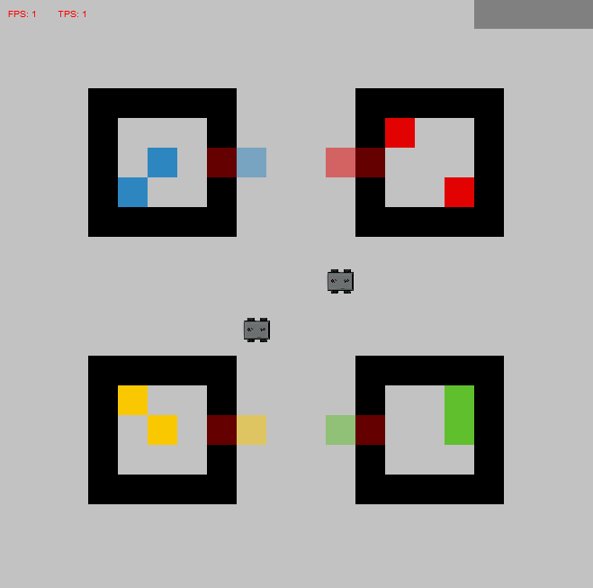

Part 1: BW4T skeleton¶
In this series of tutorials, we will create the scenario of two agents co-operating to find, grab and deliver a certain sequence of blocks. The two agents are autonomous, thus no human agents are involved in these tutorials. We will cover the implementation of the block-gathering agent brain, and handle the communication between the two agents. Basic actions like building a world and adding objects and agents to the world are assumed to be prior knowledge for this creating this scenario.
In this scenario, there are 4 rooms, each containing a certain color of blocks. Each room contains one door. The agents cannot see what is inside a room before the door is opened. Together, the agents have to deliver a sequence of blocks to a designated delivery area. The sequence is specified by the user. Once all blocks in the sequence have successfully been delivered, the simulation is over. Another version of this scenario is when the rooms contain several blocks which do not have the same color. This requires some tweaking of the situation described in this tutorial. Check the MATRXS repository for an example of ‘randomly’ colored blocks in rooms.
The image below shows what the scene created during the tutorial looks like. Having trouble building this world? Check the basic tutorials Creating your MATRXS world and Adding objects. Important for this particular solution to solving the block sequence delivery is to name the rooms in the scenario according to the color of blocks the room contains. In other words: make sure the word ‘red’ is in your room name when the room contains red blocks. The same goes for the doors and blocks.
{kind=link}
Brain initialization¶
After having created the objects in the scenario, it is time to add the block-gathering agents. We will do so by creating a new .py file in the MATRXS folder ‘agents’. The skeleton of this agent brain contains the class initialization, the method for filtering observations, and the method for deciding on an action. See ‘AgentBrain’ in Section Brains for an overview of methods used in an agent’s brain.
While initializing the brain, we create a state tracker to build the agent’s memory, a navigator to cleverly move the agent over the area, and we make sure that the agent knows what to do; what action to perform next for the given color. We can divide the separate actions an agent has to perform in this task as follows:
The agent has to find the room that contains the required block. In this scenario, the block color is indicated in the object names. For example, ‘red_room’ contains red blocks.
Once the appropriate room has been found, the corresponding door has to be opened.
The open door causes new information to appear in the agent’s memory, namely the blocks and their location within the room. The agent now has to search the room for the location of one of the blocks.
Once the agent is in the correct position, it can grab a block.
While carrying the block, the agent moves to the drop-off area.
The block is dropped once the agent has reached the drop-off area.
If the entire sequence of blocks has been delivered, the agent does nothing.
In the snippet below, an example initialization is given.
def initialize(self):
self.state_tracker = StateTracker(agent_id=self.agent_id)
self.navigator = Navigator(agent_id=self.agent_id, action_set=self.action_set,
algorithm=Navigator.A_STAR_ALGORITHM)
self.goal_cycle = ["find_room", "open_door", "search_room", "grab_block", "to_dropoff" ,"drop_block", "done"]
self.block_orders = ['yellow', 'green', 'blue', 'green', 'red']
Filtering observations¶
Depending on what you want your agents to be able to perceive, the method for filtering observations can be implemented. In the case of this BlocksWorld task, we assume the only constraint is that agents cannot see into rooms if the door has not been opened. The idea of the method is that an adapted copy of the current state gets returned as the next state. This adaptation is, in this case, the removal of items within a room of which the door has not been opened yet. If the door has been opened, the items within the room become known to the agent(s) and stay in their memory of the state.
def filter_observations(self, state):
"""
Filtering the agent's observations.
:param state:
:return:
"""
new_state = state.copy()
closed_room_colors = []
for k, obj in state.items():
if 'door@' in k and obj.get('is_open') is False:
color = k.split('_', 1)[0]
closed_room_colors.append(color)
for k, obj in state.items():
for color in closed_room_colors:
if (color in k) and ('doormat' not in k) and ('block' in k):
new_state.pop(k)
self.state_tracker.update(new_state)
return new_state
Action execution¶
The main part wanting to implement a BlocksWorld scenario is, of course, knowing how to implement agents’ behaviour. The behaviour is implemented in the method ‘decide_on_action’. In this method, we define all objects that are of interest to an agent’s actions. We also provide other practicalities, such as keeping track of the current goal and of the other agent(s). The method returns the action the agent should perform at the current time point in the simulation, followed by any variable values, if needed. In the next part of this tutorial series, you can find how exactly the currently discussed BlocksWorld agent brain has been implemented.